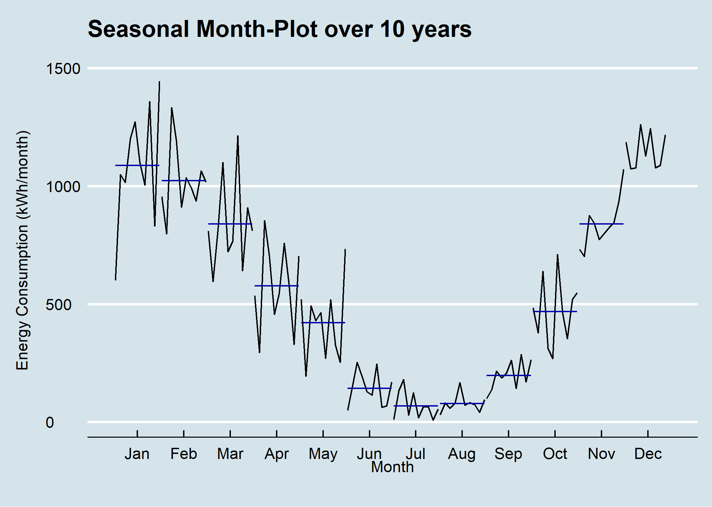

6.3 Seasonal Plot - Monthplot
6.3.1 Task

Figure 6.2: Seasonal Plot x/y per Month over 10 Years
6.3.2 Basis
6.3.3 Solution
library(forecast)
library(dplyr)
library(plotly)
library(htmlwidgets)
library(ggthemes)
library(viridis)
library(lubridate)
# load csv file
df <- read.csv2("https://github.com/hslu-ige-laes/edar/raw/master/sampleData/flatHeatAndHotWater.csv",
stringsAsFactors=FALSE)
# filter flat
df <- df %>% select(timestamp, Adr01_energyHeat)
colnames(df) <- c("timestamp", "meterValue")
# calculate consumption value per month
# pay attention, the value of 2010-02-01 00:00:00 represents the meter reading on february first,
# so the consumption for february first is value(march) - value(february)!
df <- df %>% mutate(value = lead(meterValue) - meterValue)
# remove counter value column
df <- df %>% select(-meterValue)
# value correction (outlier because of commissioning)
df[1,2] <- 600
# create time series object for ggmonthplot function
df.ts <- ts(df[-1], frequency = 12, start = min(year(df$timestamp)))
# create x/y plot
numYears = length(unique(year(df$timestamp)))
plot <- ggmonthplot(df.ts,
col = viridis(numYears),
main = "Seasonal Month-Plot over 10 years\n",
ylab = "Energy Consumption (kWh/month)\n",
xlab = "Month\n "
)
# change theme (optional)
plot <- plot + ggthemes::theme_economist()
# make plot interactive (optional)
plotly <- plotly::ggplotly(plot)
# show plot
plotly